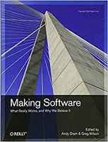
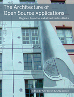
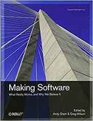
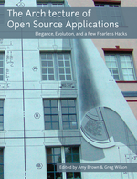
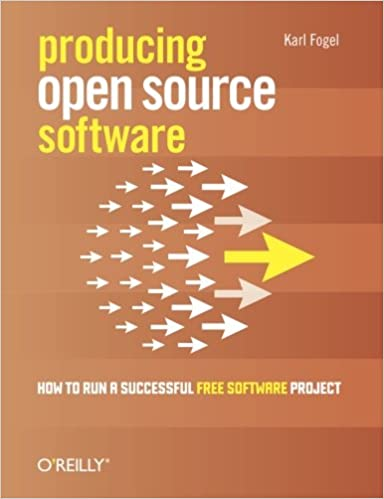
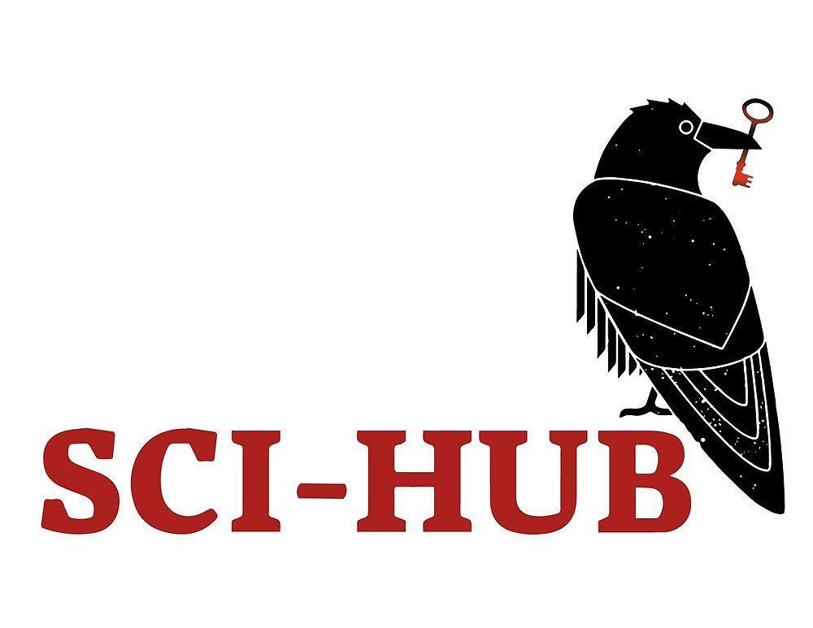
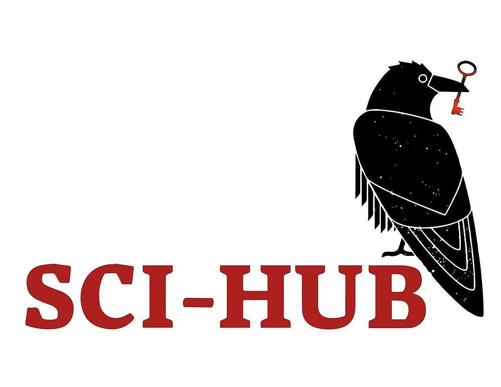
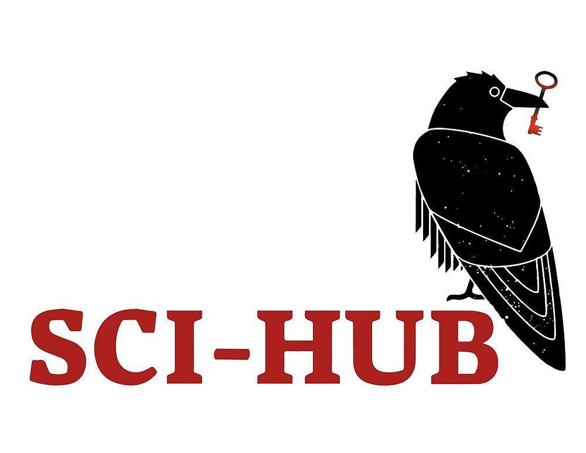

Introduction
Starting Point
A 10X engineer is one who can bring together ten other engineers and emerge with a shared understanding and rough consensus of the problem being solved and work that needs to be done.
— Lorin Hochstein
In this house we call them "project managers".
— Greg Wilson
Research Software
- Software that is created and run to answer specific questions
- Usual starting point:
- The software is just a piece of laboratory equipment
- Papers, theses, and other reports are the product
- But if the software becomes more popular:
- Focus becomes building and sharing software that many colleagues can use
- Like designing and building telescopes in astronomy

Meet Jess
- Doing their PhD in ecology
- Simulating changes in the ranges of several rodent species in the face of climate change
- Validating against dozens of datasets collected by previous students in their supervisor's lab
- Which all need to be cleaned up and put in a consistent format

Three Years Ago…
- Jess started grad school
- Could write hundred-line Python programs with lists, loops, and functions using the Jupyter notebook
- Learned it in their one and only undergrad programming course
- Knew enough HTML and CSS from a high school workshop to tweak their web page on the lab site
Their Goals
- Write and revise thesis and papers (collaboratively)
- Priority #1: get the data into a consistent format
- Also priority #1 (according to their supervisor): write the simulation program
- Which will probably be 1000-1500 lines long
- I.e., ten times larger than any program they've ever written

The Journey So Far
- Divide code into multiple files and use
import - Organize according to Noble's Rules Noble2009
- Data in one folder
- Shared code in another
- One folder per paper/project with analysis scripts
- Shared Google Docs for papers
- Because it's so much easier than the alternatives
- And it gives them an excuse to talk to the lab's LaTeX expert, who's kind of cute
The Journey So Far
- MIT license for software
- Lab standard: they just copied the file into their repo
- Using Git and GitHub with the GitKraken GUI
- No branching and no collaborators: just a backup tool


- Managing other people isn't a problem yet
- Managing their own time is
- Just started using GitHub issues as a to-do list
Me
- Don't remember much statistics…
- …but I've built a lot of complicated software…
- …and I've been lucky enough to hang out with some very smart people
 




Acknowledgments
- Daniel Standage for helping create the original workshop
- Karl Fogel for Producing Open Source Software
- Damien Irving, Kate Hertweck, Luke Johnston, Joel Ostblom, and Charlotte Wickham for Research Software Engineering with Python
- Alexandra Elbakyan for SciHub
- And everyone cited in the bibliography

 


Where Are You Now?
- Who uses your software?
- How do they find it?
- Who decides what will happen next?
- How is that communicated?
- Who can make what kinds of changes?
- What happens automatically?
- How are newcomers brought on board?